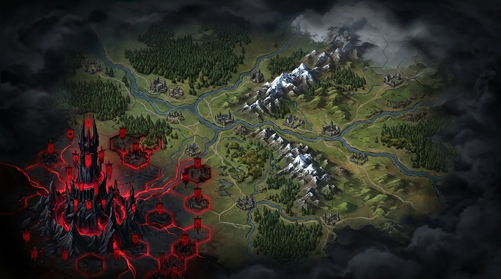
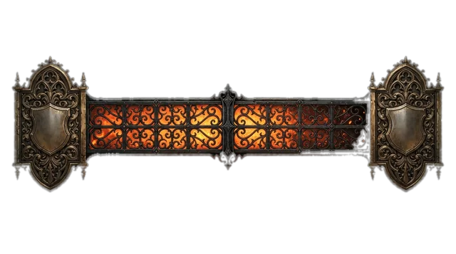

On stream
How one style looks as a whole broadcast. All overlays and chat are simulated. Simulated
Style
Layout
Malakor

On air · simulated
Simulated · sample art · AI-generated

Gatehouse vote · Raze the mill 62% · Spare it 38% · 0:41 Beacons · blaze 54%
Beacons · blaze 54%Lot draw · 128 tickets
 Map Room · 7 of 31 held
Map Room · 7 of 31 held
 Arch-Lich Malakor
Arch-Lich Malakor
Map Room extension
Viewers claim hexes for the realm.
Lot Chamber
Enter the draw with channel points.
Beacons
Every cheer and sub feeds the blaze.